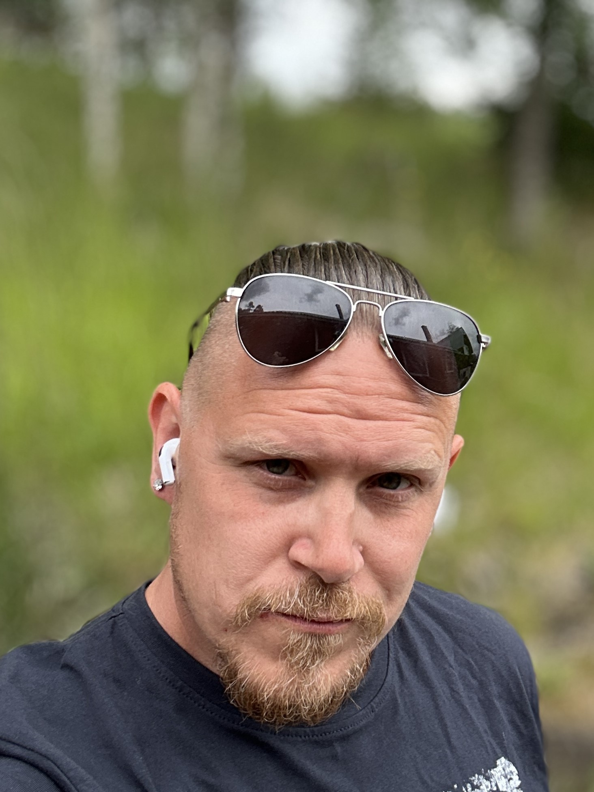

Om Haven
Jag heter Björn Andersson och jag grundade Haven Nordic Health utifrån en övertygelse om att det finns en väg till ett mer balanserat och hållbart liv.
Jag har alltid varit nyfiken på människan. Varför vi tänker som vi gör, varför vi agerar som vi gör och hur våra erfarenheter formar vilka vi blir. Under många år har mitt intresse för personlig utveckling, relationer och mänsklig förståelse vuxit fram genom både egna erfarenheter och en vilja att förstå livet på djupet.
Min bakgrund finns inom flera olika områden. Jag har arbetat med teknik som systemutvecklare, med kreativt skapande som ljudtekniker och producent, och genom livet mött många olika människor och miljöer. Det som har följt mig genom alla dessa delar är en stark vilja att förstå hur saker fungerar. Först system och teknik, sedan människor, relationer och det mest komplexa systemet av alla – oss själva.
Människan bakom Haven

Min egen väg har också format den jag är idag. Under perioder i livet har jag behövt stanna upp och omvärdera hur jag levt, vad jag prioriterat och vad som faktiskt är viktigt.
Efter en tid av hög belastning kom en punkt där jag inte längre kunde fortsätta på samma sätt som tidigare. Det blev början på en djupare resa där jag fick lära mig att lyssna på kroppen, förstå mina egna mönster och hitta en annan väg framåt.
Den resan har lärt mig att verkligt välmående är något mycket djupare än att bara fungera i vardagen. Att må bra är ett uttryck som används ofta, men jag tror att många av oss sällan får möjlighet att verkligen förstå vad det innebär.
För mig handlar välmående om en balans mellan kropp, sinne och hur vi lever våra liv. Det handlar om återhämtning, närvaro och att skapa en relation till sig själv där man inte bara kämpar vidare, utan faktiskt får möjlighet att känna sig levande.
Varför Haven finns
Haven föddes ur en önskan att skapa något som jag själv hade behövt under tidigare perioder i livet. En plats där människor kan stanna upp, reflektera och få verktyg för att hitta tillbaka till balans och riktning.
Jag tror inte att förändring handlar om att bli någon annan. Jag tror att det handlar om att återknyta kontakten med den man redan är och skapa förutsättningar för att leva mer i linje med sig själv.
Genom Haven vill jag dela de erfarenheter, insikter och perspektiv som hjälpt mig på min egen väg. Inte som någon som har alla svar, utan som någon som själv har gått igenom en förändring och vill hjälpa andra att hitta sin egen väg framåt.
Min egen resa har också lett till en djupare förståelse för närvaro, mening och vårt inre liv. För vissa människor handlar det om personlig utveckling, för andra om något mer existentiellt. På Haven finns utrymme för båda.
Det viktigaste för mig är att skapa en plats där människor känner sig välkomna, sedda och inspirerade att ta nästa steg i sin egen resa.
Vad vi tror på
-
Inre stillhet är tillgänglig för alla
Vi tror att varje människa kan hitta ett inre lugn, oavsett livssituation. Det handlar inte om prestation, utan om att ge sig själv utrymme att andas och vara närvarande.
-
Riktig återhämtning tar tid
Äkta återhämtning är en process, inte en snabbfix. Vi tror på att ge sig själv tid och tillåtelse att sakta hitta balans, utan krav och stress.
-
Du behöver inte vara perfekt för att vara hel
Att vara människa innebär att vara hel med alla sina skavanker, erfarenheter och känslor. Vi tror på att acceptera och omfamna hela sig själv, här och nu.
-
Närvaro och medvetenhet
Vi tror på ett liv där du får vara närvarande. På riktigt. Att se, känna och uppleva varje ögonblick ger kraft att leva fullt ut och skapar utrymme för tillväxt och läkning.